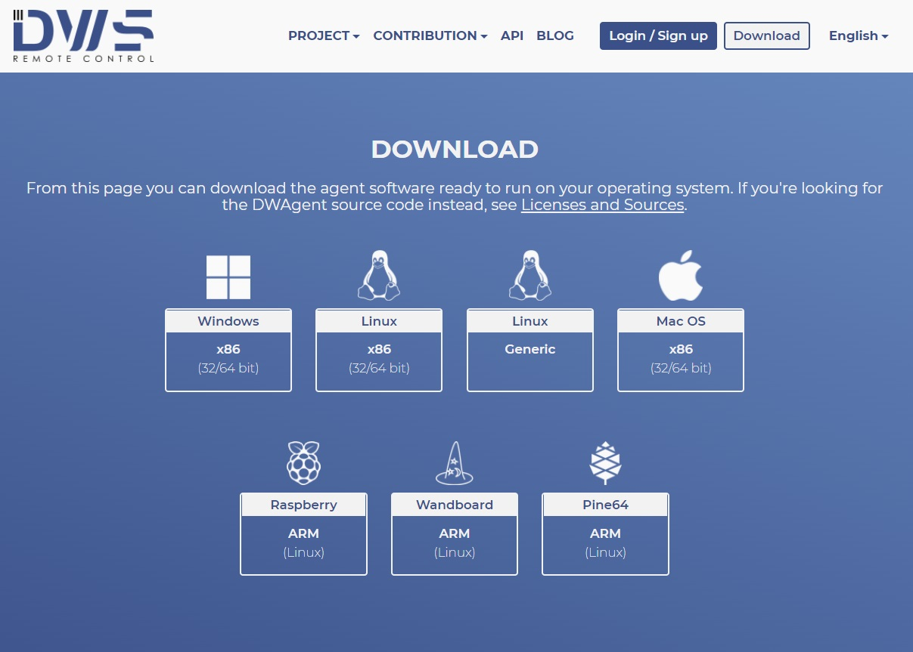
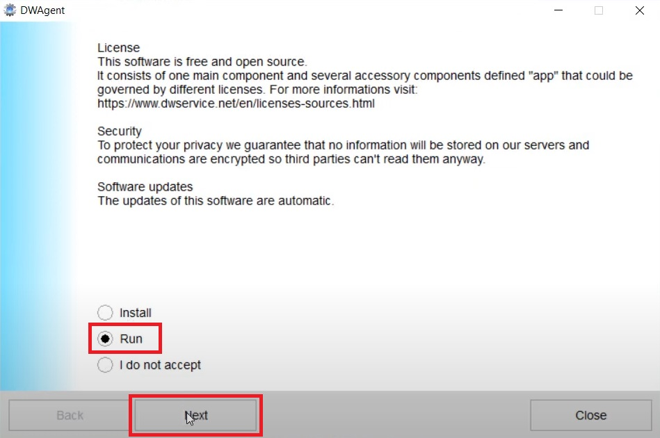
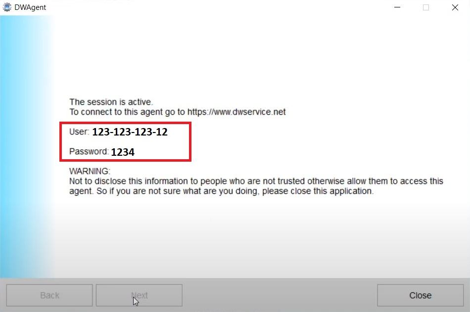
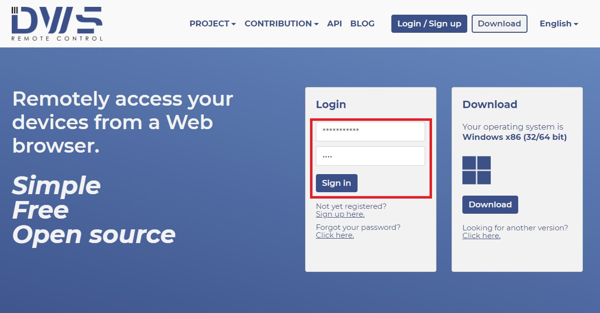
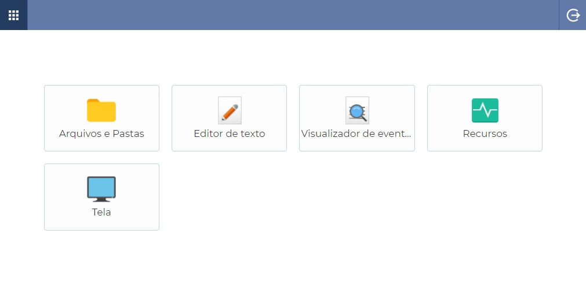
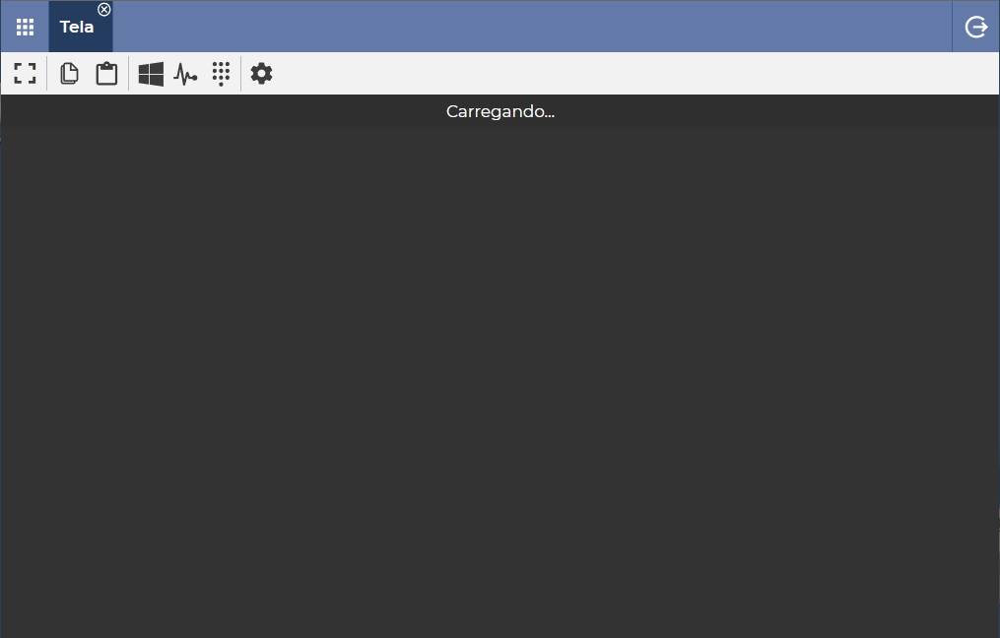

Suporte Remoto sem TeamViewer ou Anydesk
Introdução
Se você trabalha com t.i. sabe que cedo ou tarde não basta dar as direções ao seu colega/cliente, as vezes é necessário fazer você mesmo, e pra isso temos diversas opções de programas para suporte remoto... Mas todas elas tendem a fazer parte dos grupos ou A: Programas que tem uma complexidade desnecessária para um simples acesso e resolução de problemas para o usuário final (como o UltraVNC ou Remmina) ou B: Programas proprietários altamente suspeitos que deixem rastros para espionar o computador antes mesmo da inicialização e execução do programa (como TeamViewer ou AnyDesk).
E nesse mundo entre o complexo e o suspeito não resta alternativa para suporte remoto... Exceto com os imaculados DW Service! e Rust Desk!
Rust Desk
"RustDesk é uma alternativa de controle remoto de código aberto completa para auto-hospedagem e segurança com configuração mínima".
O Rust Desk funciona exatamente da mesma forma que AnyDesk e TeamViewer, então basta acessar o link de download aqui e baixar a versão específica para o teu sistema (.AppImage para Linux, .dmg para MacOS, x86_64.exe para Windows... You know the deal).

Ambos abrem o aplicativo, executam, um passa o ID e senha pro outro, o de sempre...
Mais fácil que isso impossível...
DW Service
O DW service é um programa de suporte remoto simples, direto E open-source! É o melhor dos mundos e assim como o AnyDesk sequer requer a instalação, é a minha única opção de suporte remoto hoje.
Executando o DW Service
Na máquina do cliente:
Nesse link aqui você poderá baixar o executável para o computador que será acessado.
Assim que executar o aplicativo, basta selecionar Run e depois clicar em Next. Aguarde até que ele baixe os arquivos necessários e carregue a tela de informações de sessão.
A tela de informações de sessão vai informar o usuário e senha para a conexão na sua máquina
Na máquina do suporte:
Acesse este link aqui e insira o usuário e a senha da sessão
Na tela inicial você terá acesso a um gerenciador de arquivos, editor de texto, visualizador de eventos, análise de recursos da máquina e poderá acessá-la clicando em tela.
Ao acessar a máquina do usuário você terá atalho para Ctrl+Alt+Del ou mesmo acesso á área de transferência através dos botões na guia
